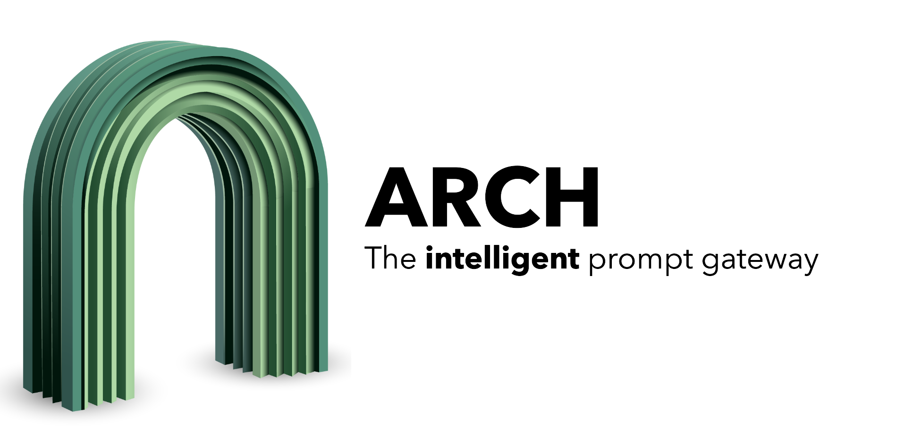

What is Arch#
Arch is an intelligent (Layer 7) gateway designed for generative AI apps, AI agents, and Co-pilots that work with prompts. Engineered with purpose-built LLMs, Arch handles all the critical but undifferentiated tasks related to the handling and processing of prompts, including detecting and rejecting jailbreak attempts, intelligently calling “backend” APIs to fulfill the user’s request represented in a prompt, routing to and offering disaster recovery between upstream LLMs, and managing the observability of prompts and LLM interactions in a centralized way.
{kind=link}
The project was born out of the belief that:
Prompts are nuanced and opaque user requests, which require the same capabilities as traditional HTTP requests including secure handling, intelligent routing, robust observability, and integration with backend (API) systems for personalization - all outside business logic.
In practice, achieving the above goal is incredibly difficult. Arch attempts to do so by providing the following high level features:
Out-of-process architecture, built on Envoy: Arch is takes a dependency on Envoy and is a self-contained process that is designed to run alongside your application servers. Arch uses Envoy’s HTTP connection management subsystem, HTTP L7 filtering and telemetry capabilities to extend the functionality exclusively for prompts and LLMs. This gives Arch several advantages:
Arch builds on Envoy’s proven success. Envoy is used at masssive sacle by the leading technology companies of our time including AirBnB, Dropbox, Google, Reddit, Stripe, etc. Its battle tested and scales linearly with usage and enables developers to focus on what really matters: application features and business logic.
Arch works with any application language. A single Arch deployment can act as gateway for AI applications written in Python, Java, C++, Go, Php, etc.
Arch can be deployed and upgraded quickly across your infrastructure transparently without the horrid pain of deploying library upgrades in your applications.
Engineered with Fast LLMs: Arch is engineered with specialized (sub-billion) LLMs that are desgined for fast, cost-effective and acurrate handling of prompts. These LLMs are designed to be best-in-class for critcal prompt-related tasks like:
Function/API Calling: Arch helps you easily personalize your applications by enabling calls to application-specific (API) operations via user prompts. This involves any predefined functions or APIs you want to expose to users to perform tasks, gather information, or manipulate data. With function calling, you have flexibility to support “agentic” experiences tailored to specific use cases - from updating insurance claims to creating ad campaigns - via prompts. Arch analyzes prompts, extracts critical information from prompts, engages in lightweight conversation to gather any missing parameters and makes API calls so that you can focus on writing business logic. For more details, read prompt processing.
Prompt Guardrails: Arch helps you improve the safety of your application by applying prompt guardrails in a centralized way for better governance hygiene. With prompt guardrails you can prevent jailbreak attempts or toxicity present in user’s prompts without having to write a single line of code. To learn more about how to configure guardrails available in Arch, read prompt processing.
Intent-Drift Detection: Developers struggle to handle follow-up, or clarifying questions. Specifically, when users ask for modifications or additions to previous responses their AI applications often generate entirely new responses instead of adjusting the previous ones. Arch offers intent-drift detection as a feature so that developers know when the user has shifted away from the previous intent so that they can improve their retrieval, lower overall token cost and dramatically improve the speed and accuracy of their responses back to users.
Traffic Management: Arch offers several capabilities for LLM calls originating from your applications, including a vendor-agnostic SDK to make LLM calls, smart retries on errors from upstream LLMs, and automatic cutover to other LLMs configured in Arch for continuous availability and disaster recovery scenarios. Arch extends Envoy’s cluster subsystem to manage upstream connections to LLMs so that you can build resilient AI applications.
Front/edge Gateway: There is substantial benefit in using the same software at the edge (observability, traffic shaping alogirithms, applying guardrails, etc.) as for outbound LLM inference use cases. Arch has the feature set that makes it exceptionally well suited as an edge gateway for AI applications. This includes TLS termination, rate limiting, and prompt-based routing.
Best-In Class Monitoring: Arch offers several monitoring metrics that help you understand three critical aspects of your application: latency, token usage, and error rates by an upstream LLM provider. Latency measures the speed at which your application is responding to users, which includes metrics like time to first token (TFT), time per output token (TOT) metrics, and the total latency as perceived by users.
End-to-End Tracing: Arch propagates trace context using the W3C Trace Context standard, specifically through
the traceparent header. This allows each component in the system to record its part of the request flow,
enabling end-to-end tracing across the entire application. By using OpenTelemetry, Arch ensures that
developers can capture this trace data consistently and in a format compatible with various observability tools.
For more details, read tracing.